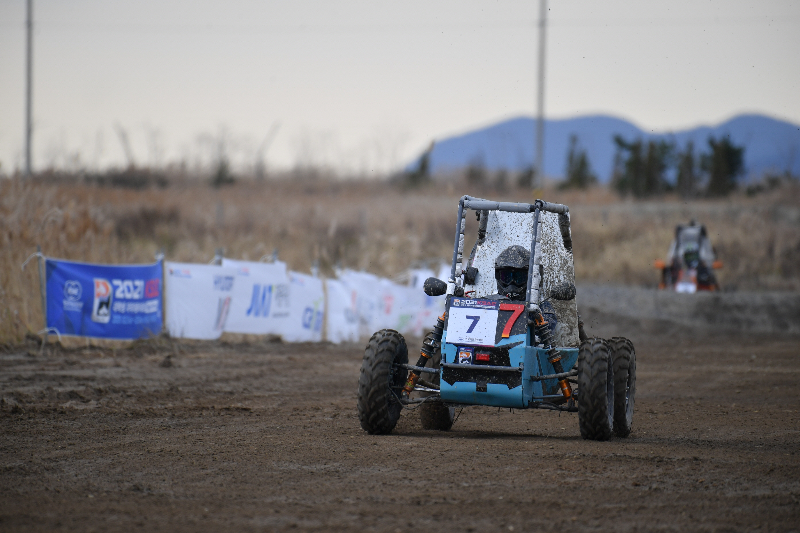
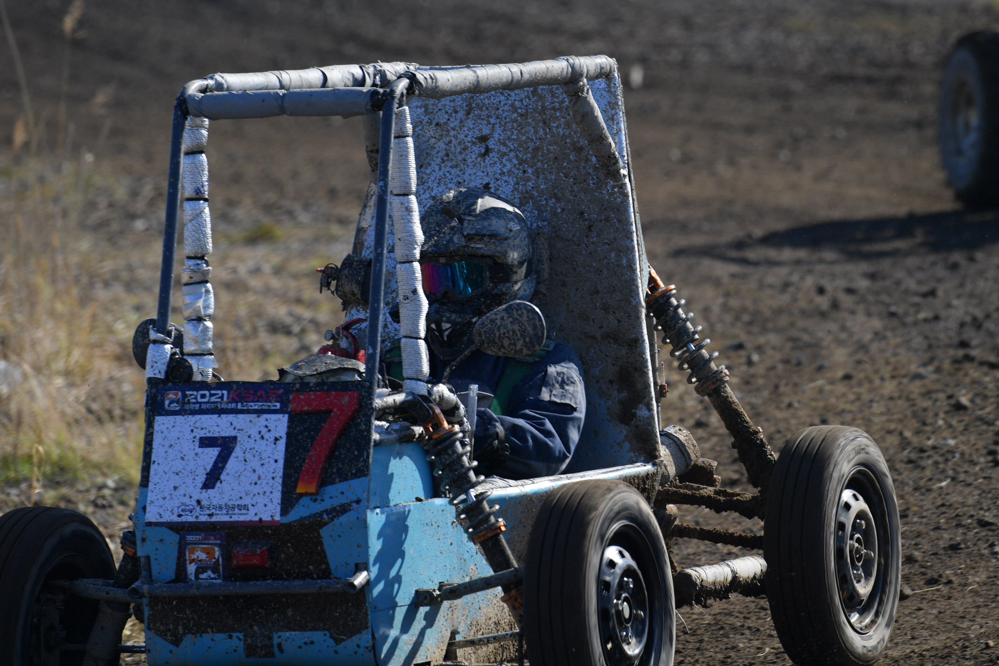

- GTB-21


KSAE 대학생 자작자동차 대회에 참가하기 위해 제작한 내연기관 자동차.
GHOST BAJA 21을 뜻한다. 125CC엔진(HONDA CBR125R)을 동력으로 하며 최고속력은 68KM.
테스트 주행 중 파워트레인에 치명적 문제 발생, 미완성 상태로 대회에 참가하게 된다.
연습주행과 내구레이스에서 순정 캬브레타에서 문제가 발생하여 비상용으로 구비했던 사제 캬브레타로 교체하였다,
내구레이스 도중 진동에 의한 볼트/너트 풀림, 차동기어에서 등속조인트 빠짐 (스냅링 부재)
조작시 기어봉 조인트 빠짐, 캬브레타 혼합비 이상 등의 문제를 발견하였다.
그 후 패자부활전에서 5위이내로 완주 하여 결승 진출.
결승전에서 조향장치 풀림으로 주행 불가되었으나, 극적으로 피트인하여 수리완료 후,
피트 아웃 도중에 경기가 종료되어 2021 KSAE 경기를 마치게 된다.
후속조치사항:
1. 모든 볼트 너트류 풀림방지 철저
2. 오프로드 타이어 외경 축소 필요
3. 캬브레타 -> 인젝션 방식으로 엔진 개선 (CBR125R 인젝션 포팅 OR VJF125엔진으로 교체)
4. 등속조인트 스냅랭 가공 후 삽입. OR 컵조인트에 스프링 장착하여 탈거 방지
5. 더 큰 기어비로 변경 및 LSD 또는 일체 동력축 변경하여 차동기어로 인한 동력손실 최소화
6. 조향장치 개선 (타이로드 세트 일자로 개선)